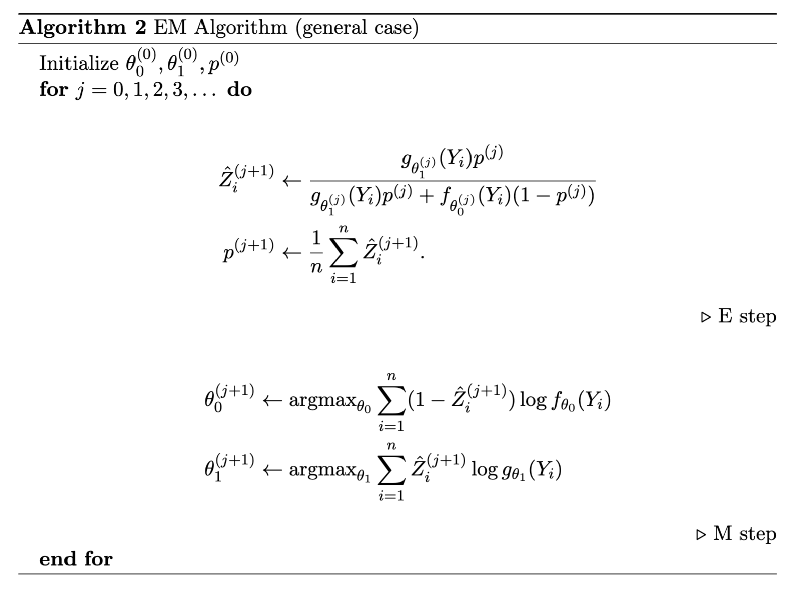

When data in a distribution is drawn from one of multiple distributions, and you don't know which distribution each datapoint is.
A common type of mixture model is two Gaussian mixed with a Bernoulli
This model has 5 parameters
Let's consider a more general case, where the mixture is given by:
We can apply the same ideas to get:
